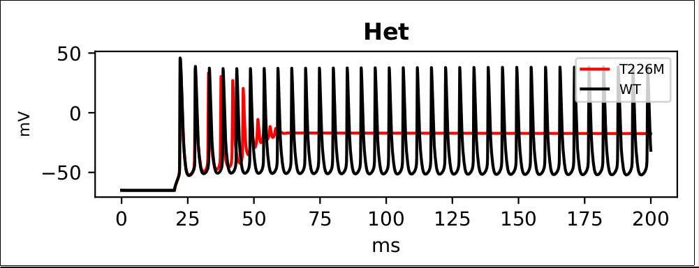
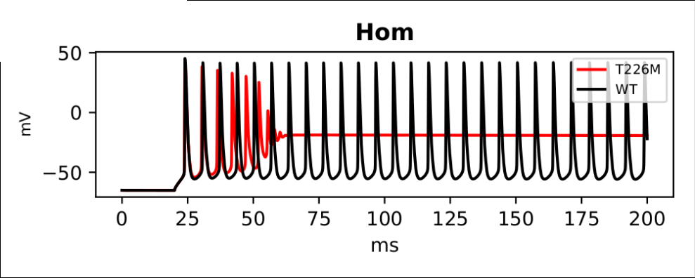
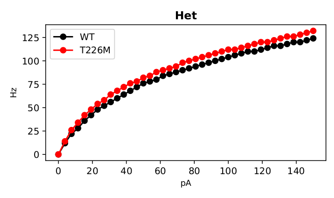
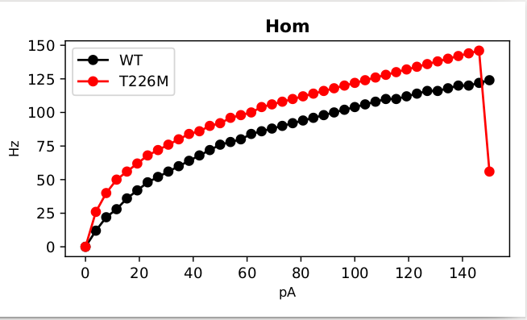

*** README ***
Optimised PV neuron with NaV1.1 conductance used in:
Berecki G, Bryson A, Terhag J, Maljevic S, Gazina EV, Hill SL, Petrou S (2019) SCN1A gain of function in early infantile encephalopathy. Ann Neurol 85:514-525
doi: 10.1002/ana.25438
This model uses the NEURON simulation environment and was contributed by A Bryson.
Model morphology and mechanisms taken from the BBP Neocortical Microcircuit Portal:
https://bbp.epfl.ch/nmc-portal/welcome
The model was optimised using BluePyOpt:
"Van Geit W, Gevaert M, Chindemi G, Rossert C, Courcol J, Muller EB, Schurmann F, Segev I and Markram H (2016).BluePyOpt: Leveraging open source software and cloud infrastructure to optimise model parameters in neuroscience. Front. Neuroinform. 10:17.
doi: 10.3389/fninf.2016.00017
HOC template for PV model is found in 'PV_template.hoc'
Morphology and mechanisms found under '/morphologies' and '/mechanisms'
run.py contains a short script to generate the time-voltage traces and the first part (it is easy to edit the code to provide more if desired) of the IF curves found in Figures 4C and 4D/
First compile the mod files with a command like nrnivmodl mechanisms
To generate figures, run with either 'if' or 'trace' as plot argument:
python run.py --plot trace
The above takes under 20 seconds to run and generates pdf's for these in the save folder:


The 'if' plot argument in the above command takes about 35 minutes and produces a file save/if.pdf with these traces:

